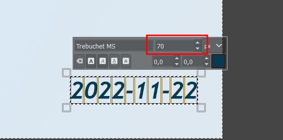

Šiame skyriuje parodomi du paruošiamieji transliacijai darbai:
- sukuriama užsklanda Youtube transliacijai, ji matoma Youtube kanale laukiant transliacijos
Po įrašo ji veikia kaip transliacijos pagrindinis paveiksliukas, kuris matomas peržiūrint visus video
- sukuriamas Youtube transliacijos renginys per
OBS-Studioprogramą
Taip pat pateikiamos papildomos rekomendacijos TT Teams kanale bei komunikuojant su kitomis komandomis apie planuojamą transliaciją.
2.1 Youtube užsklandos sukūrimas
Žemiau pateikta instrukcija naudojantis GIMP grafikos apdorojimo programa (žr. 1 skyrius).
- Parsisiunčiamas šablonas arba iš TT Teams kanalo (Trišalės tarybos grupė - > Files -> Pagalbiniai_failai), arba spaudžiant čia. Rekomenduojama išsisaugoti ant darbastalio / darbalaukio (
Desktop)
- Paleidus GIMP programą, atidaromas parsisiųstas šablono failas su
Failas->Openir pasirenkant šablono failą
Įrankiųjuostoje (kairėje pusėje) pasirinktiA(teksto editavimo simbolį) paspaudžiant ant jo su pele
- Tada su pele spaudžiama ant datos ir data koreguojama į sekančio posėdžio datą. Jeigu reikia koreguoti raidžių dydį, dvigubu pelės paspaudimu galima pasirinkti visas raides ir tada padidinti arba sumažinti raidžių dydį, išreikštą
px(turėtų būti 70).

- Norint eksportuoti failą kaip paveiksliuką, spaudžiama ant:
Failas->Eksportuoti.
Tada pavadinimą reiktų papildyti numatomo posėdžio data ir spausti ant Eksportuoti.

Atsidariusiame pop-up lange nieko nekeisti ir spausti vėl spausti ant Eksportuoti
Darbalaukyje dabar turėtų būti atsiradęs naujas failas

Šį naują failą ir naudosime Youtube užsklandai. GIMP programą galima išjungti
2.2 Būsimos Youtube transliacijos sukūrimas
Šiame poskyryje daroma prielaida, jog OBS-Studio programa yra instaliuoti ir susieta su SADM Youtube paskyra (žr. 1 skyrius).
- Paleidus
OBS-Studioprogramą spausti antManage brodcast

- Atsidariusiame lange reikia užpildyti viską transliacijos informaciją. Žemiau pateikiamas pvz., TT posėdžiui 2022-10-25.

Title: Trišalės tarybos posėdis 2022-10-25Description: galima įrašyti “Posėdžio darbotvarkę ir posėdžio medžiagą galima rasti: https://socmin.lrv.lt/lt/administracine-informacija/tarybos-ir-komisijos/lr-trisale-taryba/trisales-tarybos-posedziai”Privacy-PublicCategory-News & PoliticsIs this video made for kids?pasirinktiNo, it's not made for kidsThumbnailpasirinkti spaudžiant antSelect fileir pasirenkant pirmame šio skyriaus dalyje sukurtą užsklandą- Uždėti varnelę ant
Schedule for laterir pasirinkti laiką, kada planuojama transliacijos pradžia (pvz.,2022-11-22 14:00atitinka11/22/22 2:00 PM) - Uždėti varnelę ant
Enable Auto-startIREnable Auto-stop, šis pasirinkimas leis pradėti ir užbaigti Youtube transliaciją tiesiogiai iš OBS-Studio programos - Pasitikrinti ar viskas suvesta teisingai, spausti ant
Schedule broadcast
Nuėjus į Youtube, netrukus galima rasti transliaciją.
2.3 Komunikacija su Komunikacijos komanda
- Sukūrus planuojama transliaciją, būtina informuoti Komunikacijos komandą apie tai, kurią dieną ir kuriuo metu bus naudojamasi transliacijos prieiga, tam kad tuo pačiu metu nevyktų jokių kitų transliacijų. Informavimas yra pakankamas privačia žinute per TEAMS platformą.
2.4 TT Teams kanalo darbai
Sukūrus transliacijos renginio anonsą, taip apt rekomenduojama sukurti reikiama aplankų struktūrą TT Teams kanale:
Files->Posėdžiai->YYYY-> sukurti naują aplanką skirtąYYYY_MM_DD_TT/posėdžiui (jeigu tai Darbo Grupė, tada YYYY_MM_DD_DG). Šio aplanko viduje sukurti šiuos aplankus:- video_įrašas/
- dokumentai/
- protokolas/
- medžiaga/
- programa.pdf / programa.docx
Aplankas dokumentai galėtų būti archyvuojamas į .zip archyva ir naudojamas socmin.lt tinklapyje pateikti visą medžiagą, kuri buvo naudota susitikimo metu (žr. 4 skyrius)